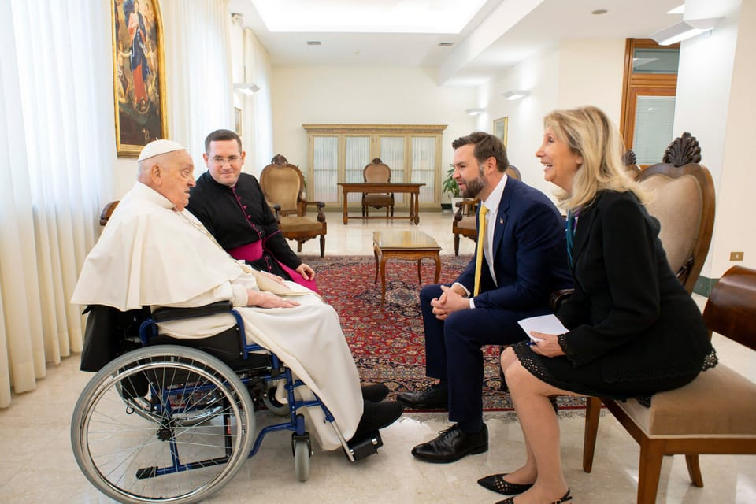

世界苦茶04月22日新闻 | 32条 | 美菲进行联合军演日澳参与

美菲进行联合军演日澳参与 | 教宗方济各去世 | 特朗普的支持率继续下跌 | 美国提出的俄乌战争停火条件对乌克兰非常不利 | 天津烂尾超高摩天大楼将复工
透明茶室
苦茶数据
美元兑人民币：7.31（昨日7.29，前日7.30）
美元兑日元：140.43（昨日142.38，前日142.17）
上证指数：3299（昨日3286，前日3276）
标普500指数：5158（昨日5282，前日5275）
比特币：88283（昨日87282，前日85145）
布伦特原油：66.94（昨日66.79，前日67.96）
中国新闻
• 霍启刚呼吁粮食多元 ：在中美贸易摩擦持续升温的背景下，中国全国人大代表、香港立法会议员霍启刚说，中国对大豆的需求主要依赖进口，而其中相当一部分来自美国，因此他认为粮食进口来源必须更多元化，确保“中国人的饭碗牢牢端在自己手中”。霍启刚星期天在脸书发文说，他在复活节假期间与一批香港大学生赴北京展开“粮食安全教育”之旅，了解粮食安全及国家现代农业发展。他说，中美贸易战将两国间的粮食贸易问题带入公众视野，使社会更加关注粮食安全的重要性。他以大豆为例指出，中国的大豆需求主要依赖进口，除巴西和阿根廷外，相当一部分来自美国。
• 广西现首场超警洪水 ：受强降雨影响，中国广西一条支流出现超过警戒水位的洪水，为广西今年首场超警洪水。据新华社报道，从广西壮族自治区水文中心获悉，星期天早上8时至星期一早上8时，贺州、河池、梧州、百色及桂林等市部分地区降中到大雨，局地暴雨。出现超警洪水的是洛清江支流西河。自治区水文中心预测，未来24小时，柳州及桂林等市部分中小河流可能出现小幅涨水过程，各主要江河水情平稳。
• 天津117大厦将复工 ：中国北方第一高楼、目前处于停工状态的天津117大厦项目将复工，预计2027年完工。据红星新闻报道，天津117大厦获得新的施工许可。根据施工许可，天津117大厦计划于2025年4月30日重启施工，2027年4月竣工。大厦2008年9月开工，2015年9月实现建筑结构封顶，但随后项目停工、复工又停工，历经股权转让等重重波折，最终沦为烂尾楼。
• 韩中海域设施引争议 ：韩国对中国在两国暂定措施水域设置钢制构筑物表担忧，中国外交部回应称，中方企业在中韩暂定水域建立的渔业养殖设施，这并不违反中韩的有关协定。韩国国际广播电台星期一报道，中国在韩国西部海域的暂定措施水域设置了一处高70余米、宽80余米，并配有直升机机场的大型构筑物，据悉是一艘1982年在法国建造的石油钻井船，在中东等地使用后报废。KBS报道称，该构筑物设置在中方声称为“深远海渔业养殖设施”的深蓝1号、2号附近，中方称这是深蓝的管理辅助设施，但韩国方面有意见怀疑该构筑物是在海底打桩的固定设施，韩国政府已着手具体考察情况。报道也说，2000年以来，中国海军的活动区域逐渐向朝鲜半岛扩张，中国在西海的活动不同寻常。 （翻评：哪个外交奇才提出在这个节骨眼儿，中韩自贸谈判，韩国总统大选前在领土问题上刺激韩国的？）
• 中方制裁美方人员 ：针对美国制裁六名中国大陆和香港官员，中国外交部表示，中方决定对在涉港问题上表现恶劣的美国国会议员、官员和非政府组织负责人实施制裁。美国在3月31日对六名中国大陆和香港高级官员实施制裁，原因是他们进行“跨国镇压”，而当中行为侵蚀了香港的自治。中国外交部发言人郭嘉昆星期一在例行记者会上表示此举严重干涉香港事务和中国内政，严重违反国际法原则和国际关系基本准则，“对这种卑劣行径予以强烈谴责”。
• 伊朗外长将访中国 ：伊朗外交部发言人巴盖伊星期一说，外长阿拉克奇将于星期二访问中国。路透社报道，这一行程正值伊朗与美国计划于来临的星期六在阿曼举行第三轮核谈判前夕。阿拉克奇上周访问莫斯科期间接受国家电视台采访时说，德黑兰在核问题上始终与俄罗斯和中国保持密切沟通，称“两国是伊朗的朋友，在重大议题上始终保持协商”。
亚太印太新闻
• 美菲实弹测试导弹 ：菲律宾与美国星期一启动年度“肩并肩”联合军演，逾1万4000名士兵展开为期三周的“全面实战测试”。路透社报道，此次的联合演习将持续至5月9日，期间将展示包括“NMESIS”反舰导弹系统与海马斯高机动火箭系统在内的多种美方先进武器。菲方则将在实弹演练中测试本国新型导弹，展开联合火力操作。美军演习总指挥格林在简报会上指出，今年演习旨在“全面检验联军战力”，涵盖应对导弹攻击、防御海上入侵，以及击沉退役菲军舰等科目。
• 日多政要供奉靖国神社 ：日本首相石破茂星期一以首相名义，向供奉二战甲级战犯的靖国神社供奉名为“真榊”的祭品。新华社报道，靖国神社21日起举行为期三天的春季大祭。除石破茂以外，日本卫生部长福冈资麿、国会众议院议长额贺福志郎和参议院议长关口昌一，也向靖国神社供奉了“真榊”。据日本媒体报道，日本内阁暂无任何成员明确表示将在大祭期间进行参拜。靖国神社位于东京千代田区，神社内供奉有包括东条英机在内的14名二战甲级战犯。长期以来，日本部分政客、国会议员坚持参拜靖国神社，遭到日本国内众多爱好和平人士和国际社会的强烈反对。
• 台谍案曝光估超5000人 ：台湾前军情局长刘德良受访时说，台国安单位多年前曾评估潜伏台湾的大陆间谍约5000人。以当前两岸情势，渗透台湾的大陆间谍估计远超5000。据台湾《中国时报》星期一报道，台湾检调单位近日侦办大陆间谍案，包括立法院前院长游锡堃助理盛础缨、总统府总统办公室前咨议吴尚雨、民进党民主学院前副主任邱世元、新北市议员李余典特助黄取荣、国安会秘书长吴钊燮担任外交部长时的助理何仁杰等人涉案。除盛础缨之外，其他人都收押。刘德良目前在政治大学、国防大学、国安局安研班等授课，讲学内容均称潜伏台湾的大陆间谍已逾5000人。刘德良受访时说，大陆间谍案抓到证据都得两三年时间，能破获是好事，代表国安有一定的反情报能量。
• 韩美将举行2+2会议 ：韩国和美国将于星期四在美国举行2+2高级别会议。韩联社报道，韩国代总统韩悳洙星期一召开经济安全战略工作组会议时宣布，韩美负责财政和贸易事务的部长级官员将于美国时间24日上午8时在华盛顿举行会议。韩方代表为副总理兼企划财政部长崔相穆和产业通商资源部长安德根，美方代表为美国财长贝森特和贸易代格里尔。
• 李在明支持率破50% ：最新民调显示，在韩国新一届总统热门人选中，共同民主党前党首李在明支持率首次突破50%。韩联社报道，民调机构Realmeter星期一发布的调查结果显示，李在明支持率为50.2%，较前一周上升1.4个百分点；国民力量党初选候选人、前雇佣劳动部长金文洙为12.2%，较前一周上升1.3个百分点。
科技新闻
• 欧盟强化数码监管 ：欧盟委员会主席冯德莱恩称，欧盟将坚定执行完整的数码监管体系，无论相关企业的负责人是谁、总部设于何地，包括社交媒体平台X、脸书母公司Meta、苹果及抖音在内的科技巨头皆适用相同标准。路透社报道，冯德莱恩接受美国政治新闻网站Politico访问时指出：“这就是为什么我们已经对TikTok、X、苹果、Meta等企业展开案件调查。我们公平、适度且无偏见地执行规则。我们不在乎公司来自哪里、由谁经营，我们在乎的是保护民众利益。
• Meta用AI识别未成年用户 ：Meta周一宣布，其正在使用人工智能技术来寻找在 Instagram 上谎报年龄以绕过保护措施的儿童。当发现一个怀疑属于青少年的账户时，即便该账户显示的是成人生日，平台也会将其纳入受限的青少年账户。青少年账户于去年在 Instagram 上推出的，为年轻用户提供一种内置保护措施的应用体验。这些保护措施会自动应用于青少年，限制谁可以在应用中联系青少年，并限制账户持有者可以查看的内容类型。16岁以下青少年需要父母许可才能更改任何这些设置。 Instagram 表示正在采取措施确保其技术准确，并正确将青少年归入青少年账户。不过，若公司确实出现错误，会提供更改设置的选项。
• 欧盟查美科企遭美批评 ：欧盟委员会主席冯德莱恩表示，欧盟将坚定执行完整的数字监管体系，无论相关企业的负责人是谁、总部设于何地，包括社交媒体平台X、Meta、苹果及抖音在内的科技巨头皆适用相同标准。冯德莱恩说：“这就是为什么我们已经对TikTok、X、苹果、Meta等企业展开案件调查。我们公平、适度且无偏见地执行规则。我们不在乎公司来自哪里、由谁经营，我们在乎的是保护民众利益。”欧盟的《数字市场法案》受到了美国总统唐纳德·特朗普政府强烈批评。今年二月，特朗普签署备忘录，警告美方将对欧盟《数字市场法案》和《数字服务法案》进行审查，认为这两项立法影响美企在欧盟的经营方式。
• 华为将出货AI芯片910C ：两位知情人士透露，华为公司计划最早于下月开始向中国客户批量出货其先进的910C人工智能芯片，部分芯片已经开始发货。华为的910C图形处理器代表了一种架构上的演进而非技术突破。该芯片通过先进集成技术，将两颗910B处理器集成封装，实现了与英伟达H100芯片相当的性能。这意味着其的计算能力和内存容量是910B的两倍，同时还实现了渐进式改进，包括增强了对多样化人工智能工作负载数据的支持。中国中芯国际正在使用其N+2 7nm工艺技术制造GPU的部分主要部件，尽管其芯片良率较低。
财经新闻
• 特朗普施压降息 ：美国总统特朗普警告，若美国联邦储备局不立即下调利率，美国经济恐将放缓、他还再次点名批评美联储主席鲍威尔行事迟缓。综合路透社和彭博社报道，特朗普星期一在社交媒体发文说：“如今各项成本正如我所预料般迅速回落，几乎已不存在通胀问题，但如果‘太迟先生’——这个大输家——不立刻降息，经济可能会放缓。”尽管油价近期下滑，美国3月消费者物价指数显示，杂货价格仍同比上涨逾2%，环比也增加近0.5%。
• LG三星起诉印废物政策 ：法庭文件显示，韩国的LG和三星已起诉印度政府，要求废除一项提高对电子垃圾回收商支付金额的政策。这两家公司加入了其他一些大公司的行列，以对企业造成影响为由对印度的环境法规提出质疑。这些诉讼以及其他相关诉讼定于周二开庭审理，标志着外国公司与印度总理莫迪领导的政府之间，在废物管理措施立场上的对峙有所升级。三星和LG曾游说反对为支付给回收商的价格设定下限的决定，而印度称，此举对于吸引更多正规企业进入该行业并促进对电子垃圾回收的投资是必要的。印度新规要求，回收消费电子产品的最低支付价格为每公斤22卢比。 （翻评：在中国听说过外国企业起诉中国中央政府吗？）
• 台美关税谈判推进 ：台湾外交部长林佳龙披露台美关税问题协商进展时说，台湾驻美代表处已与美国务院、贸易代表署等单位建立管道密集咨商，谈判范围包括关税与非关税贸易障碍，以及涉及投资、采购和出口管制等议题。综合台湾《经济日报》和中时新闻网报道，林佳龙星期一受访时说，台美谈判现已建立管道；除了美国国务院，台湾驻美代表处也特别与美国贸易代表办公室针对谈判议题与程序密切咨商，谈判正在顺利进行当中。他说，此前台美视讯会议谈判时所聚焦的关切议题、也顺利进行中；关税与美国长年关心的非关税贸易障碍，以及涉及投资、采购和出口管制等议题，都在这次谈判范围。
• 国资委督促央企付款 ：中国国资委要求中央企业强化资金统筹，确保及时付款。据新华社星期一报道，中国国务院国资委近日作出专门部署，要求中央企业主动作为、靠前发力，强化资金统筹安排，确保及时付款，并可对中小企业小额款项、长账龄款项依法协商提前支付，加力支持产业链上下游企业。此举旨在落实北京方面的要求，加强保障中小企业款项支付，以畅通资金循环有效助力畅通国民经济循环，充分彰显中央企业责任担当。
• 黄金期货创历史新高 ：中国黄金期货价格连续第11个交易日上涨，上海期货交易所的黄金期货主力合约突破每克800元人民币关口，创历史新高。据第一财经，中国黄金期货今年已累计上涨近30%。国际金价也持续攀升，截止星期一上午9点，黄金期货价已上涨至每安士3388.05美元。
• 印度对钢铁征保护关税 ：印度财政部周一发布公告，宣布对部分钢铁产品临时征收12%的保护性关税，以遏制进口激增。印度是全球第二大粗钢生产国，该国此次关税措施自公告发布起生效，有效期两百天。这是自美国总统特朗普四月份对多国征收钢铝关税以来，印度首次出台重大贸易限制政策。新德里此举主要针对中国，在2024/25 财年，中国已成为仅次于韩国的印度第二大钢铁进口来源国。根据印度政府临时数据显示，印度已连续两个财年成为钢铁净进口国，2024/25 财年成品钢进口量达到950万公吨的九年新高。
• 日银称关税风险可控 ：熟悉日本央行想法的四位消息人士称，预计央行将在下周发出信号，表示美国提高关税带来的风险不会破坏薪资和通胀上升的周期。而薪资和通胀上升被视为继续加息的关键。
• 沙特阿美携比亚迪合作 ：沙特阿拉伯国家石油公司(沙特阿美)宣布与中国比亚迪签署一项联合开发协议，探索在新能源汽车技术开发方面的合作。该协议由沙特阿美旗下的沙特阿美技术公司签署，协议旨在提高车辆效率和环保性能，目前沙特正在加紧向清洁交通方式的转型。
• 美国通过关税施压印度，要求给予亚马逊和沃尔玛完全市场准入： 美国政府计划在就一项涵盖食品、汽车等多个行业的美印贸易协议进行广泛谈判的过程中，敦促印度在电商领域创造公平的竞争环境，并允许亚马逊和沃尔玛等在线零售商完全进入其规模达1250亿美元的电商市场。如果无法达成协议，印度对美出口将面临26%关税。知情业内高管称，沃尔玛CEO麦克米伦在海湖庄园提出了印度对外国电商公司设置壁垒的问题。作为谈判的一部分，特朗普政府正在与美国电商平台密切协调。印度只允许美国电商公司作为其他公司销售产品的在线平台运营。华盛顿称此为“非关税壁垒”，同时限制了外国对零售业的直接投资，美国零售商还面临印度标准局的反复产品检查。
俄乌战争
• 俄赞美拒乌入北约 ：克里姆林宫星期一说，美国总统特朗普政府排除乌克兰加入北约的立场，令俄方感到满意，但拒绝就特朗普希望本周促成俄乌停战协议的言论作出回应。路透社报道，美国特使凯洛格日前说，乌克兰“加入北约的问题已被排除”。特朗普则多次将美方过去对乌克兰北约成员资格的支持，视为俄乌战争爆发的原因之一。克里姆林宫发言人佩斯科夫星期一受访时说：“我们从华盛顿各层级听到乌克兰加入北约的可能性被排除在外。当然，这一立场令我们感到满意，也符合我们的立场。”
• 俄伊签署战略协议 ：据俄罗斯新闻社(RIA)报道，俄罗斯总统普京签署一项法律，批准与伊朗的战略伙伴关系条约。普京今年1月与伊朗总统佩泽希齐扬签署了为期20年的战略伙伴关系条约。
• 无法加入北约，承认吞并克里米”，华盛顿正在等待基辅对停火方案的回应： 《华尔街日报》4月20日援引一份获得的文件报道称，乌克兰本周面临压力，要求其对美国关于结束与俄罗斯战争的提议做出回应，该提议包括华盛顿可能承认莫斯科2014年吞并克里米亚，并禁止乌克兰加入北约。这些提议是特朗普政府高级官员4月17日在巴黎与乌克兰和欧洲同行举行的秘密会议上概述的，西方官员向《华尔街日报》证实了这一消息。此前，华盛顿表示，除非取得进展，否则准备在未来几天内放弃停火努力。预计乌克兰将在本周晚些时候于伦敦举行的后续会议上提出反馈意见。如果基辅、华盛顿和欧洲盟友达成一致，这些提议可能会正式提交给莫斯科。 （翻评：那俄罗斯入侵乌克兰的代价是什么？）
其他新闻
• 特朗普支持率创新低 ：路透/益普索民调显示，美国总统特朗普的公众支持率降至其重返白宫以来的最低水平，因美国人对他扩大权力的努力表现出警惕的迹象。在为期六天的民调中，约42%的受访者认可特朗普作为总统的表现，低于三周前路透/益普索民调的43%，也低于1月20日特朗普就职典礼后数小时内的47%。
• 特朗普支持防长泄密案 ：白宫发言人莱维特表示，特朗普总统支持美国国防部长赫格塞思，此前 • 报道称后者在一个包括其妻子、兄弟和私人律师在内的聊天群中分享了3月打击伊朗支持的也门胡塞武装的细节。莱维特称，赫格塞思在两次Signal群聊中均未透露任何机密信息。
• 千名学者签反关税宣言 ：美国多家媒体报道，近1000人包括数十位世界顶级的经济学家签署了一份“反关税宣言”。他们批评，特朗普政府采取的关税政策是对普通美国人所面临的经济状况的错误理解。他们警告，这可能引发一场“自我造成的经济衰退”，并呼吁终止特朗普前后矛盾且有害的贸易政策。报道称，由美国诺贝尔经济学奖得主詹姆斯·赫克曼和弗农·史密斯等著名经济学家签署的“反关税宣言”，周末在网上流传，截至星期天凌晨已有976人签名。
• 教宗方济各去世 ：路透社报道， 教宗方济各于星期一早晨7时35分在梵蒂冈安详辞世，享年88岁。梵蒂冈枢机团团长法雷尔星期一在视频声明中宣布这一消息，说“罗马主教方济各今晨返回天父的怀抱……他的一生，皆奉献于侍奉主与祂的教会”。方济各是首位来自拉丁美洲的罗马天主教教宗，自2013年起担任教宗职务，领导全球逾10亿信徒，致力于推动教会改革与社会正义。 他的离世标志着他12年教宗任期的结束，也将启动新一届教宗选举的程序。
• 哈佛起诉冻结资金 ：美国哈佛大学4月21日起诉特朗普政府，指控政府冻结联邦资金违反宪法和《民权法案》。诉讼还认为冻结措施“任意且反复”，违反了《行政程序法》。诉讼表示，政府未能也无法说明对反犹太主义的担忧与其冻结医疗、科技等研究之间的任何合理联系，这些研究旨在拯救美国人生命、促进美国人成功，维护美国人安全和保持美国在全球创新的领导者地位。政府也未承认无限期冻结研究资金对哈佛的研究项目、研究受益者以及进一步推动美国创新和进展的国家利益产生的重要影响。特朗普政府未立即置评。教育部发言人拒绝置评。